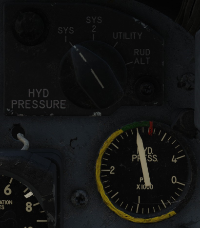

Hydraulic System
Introduction
The aircraft has three separate constant-pressure type hydraulic systems: utility and two flight control systems. Each one of the three systems is individually pressurized by a engine driven hydraulic pump to 3000 psi.
In case of engine driven pump failure the secondary flight control system can be driven by a deployable Ram Air Turbine (RAT).
Utility System
This system has a 2.7 gallon reservoir and is pressurized by an engine pump. It supplies hydraulic power to the following units:
- Rudder
- Landing Gear & Doors
- Wheel Brakes
- Wing Flaps
- Nose Wheel Steering
- Speed Brake
- Automatic Flight Control System
- Gun and Purge Door
- The Ram Air Turbine Door
If the pressure in this system drops too low to power the rudder then a valve is triggered automatically to power the rudder from the number 2 flight control system.
Emergency Flap Accumulator
In case of utility hydraulic failure or flap control failure the flaps can be lowered for landing using the emergency flap switch.
Warning
There is only sufficient stored energy to lower the flaps once using this method.
Emergency Nose Wheel Accumulator
In case of utility hydraulic failure the emergency gear release can be used to drop the main gear by gravity, the nose gear on its own cannot solely be dropped by gravity as such an emergency accumulator is provided to drop the nose gear.
Flight Controls 1 & 2 Systems
Two complete independent and simultaneously operating hydraulic systems (Number 1 and Number 2) actuate the primary flight control surfaces. Both of these systems are powered by their own separate engine pump and are completely independent. Each system supplies half the demand of power to the control surface.
Failure of one of these systems does not affect the other. In case of frozen engine or engine pump failure number 2 hydraulic pressure can be maintained by a deployable Ram Air Turbine.
In the case of utility system failure the number 2 system can also provide power to the rudder.
The following items are powered by these systems.
| Item | System(s) |
|---|---|
| Ailerons | 1 & 2 |
| Horizontal Stabilizer | 1 & 2 |
| Horizontal Stabilizer Trim | 2 |
| Rudder (in case of utility failure) | 2 |
Ram Air Turbine (RAT)
This acts as an emergency hydraulic pump for the number 2 system. When engine RPM drops below 40% the centrifugal switch triggers the deployment of the RAT automatically provided there is no weight on the nose gear. The RAT can also be deployed manually using the lever in the cockpit.
If the RAT door is open an audible warning tone can be heard in the pilots headset along with the landing gear handle knob light.
If the pump is no longer needed it must be shut down manually using the lever in the cockpit.
Utility hydraulic pressure is required to open the RAT however in case of utility failure stored energy in the Ram Air Turbine door emergency accumulator is used.
Deployment of the Ram Air Turbine can be tested in flight using the flight control hydraulic system test switch.
Emergency Wheel Brake Pump
In case of utility hydraulic pressure loss an electrical driven pump is used to pressurize the wheel brake accumulators anytime the pressure drops below 750 psi. This pump can be checked for correct function by listening for the pump when the aircraft is cold and dark by depressing the wheel brakes.
Controls and Indicators
Hydraulic Pressure Indicator and Knob

This knob and gauge indicate the pressure of the selected system.
Ram Air Turbine Door Lever
This is used to deploy the Ram Air Turbine manually, this lever will automatically actuate when the Ram Air Turbine is deployed automatically.
Flight Control Hydraulic System Test Switch
Holding this switch at the SYS 2 OFF position will close the test valve removing hydraulic pressure for this system. Moving the switch to RAM TURB ON SYS 2 OFF will continue to remove hydraulic pressure from the number 2 system and provide utility hydraulic power to the ram air turbine causing the ram air turbine door lever to automatically move to the open position.
After testing the lever must be manually moved aft to close the Ram Air Turbine Doors.
Note
Since this test is to be carried out during flight: there is a pressure switch preventing the test valve from being actuated if the number 1 system pressure is lower than 650 psi so as to not cause primary flight control power loss.
Note
A nose gear load switch prevents the number 2 system from being shut off on the ground.
Rudder Hydraulic Test Switch
This spring loaded switch is used to test if the hydraulic summing valve is functioning correctly for the rudder actuator so that, in case of insufficient utility pressure, the rudder can continue to function using the number 2 system pressure.
To test this valve the switch is held in the ALTERNATE RUDDER position to shut off utility pressure, then the rudder can be moved and it should be observed that the rudder pressure jumps from its nominal pressure up to 3000 psi to match the pressure of the number 2 hydraulic system.
Emergency Speed Brake Dump Lever
In case of utility hydraulics failure with the speed brake in the open position it will be necessary to retract the speed brake. Without hydraulic pressure this is not possible so the dump lever can be used to release any hydraulic pressure allowing the speed brake to be retracted by the airflow.
Emergency Gear Release
This deploys the gear using gravity in case of hydraulic failure. The nose gear is still deployed using hydraulic pressure stored in the emergency nose wheel accumulator.
Warning
After this system is used the aircraft must be repaired in order to reset this system.
Emergency Flap Switch
This deploys the flaps to the landing position in case of electrical flap control failure or utility hydraulic failure.
Warning
There is only sufficient stored energy in the emergency flap accumulator to lower the flaps once using this method.